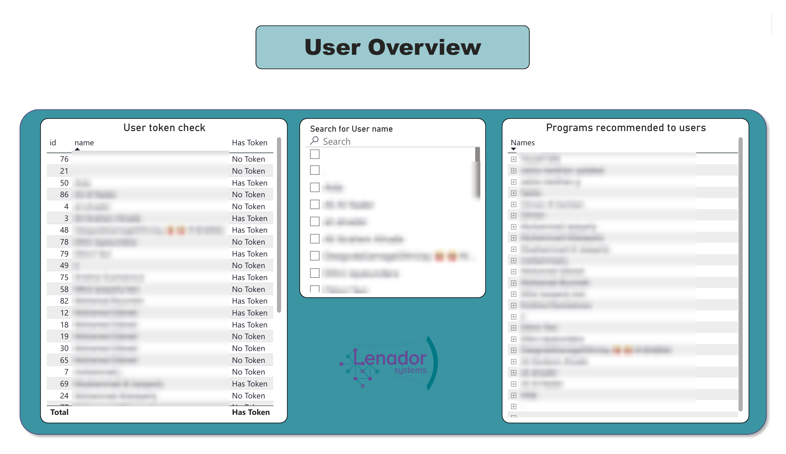
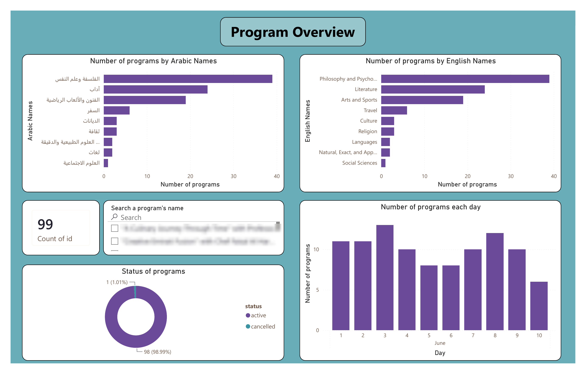

Tokens & Programs
An internal Power BI report for Lenador Systems showing which users hold an active token, and what programs are in the catalogue and when they run.
About the project
Lenador runs a token-based access system tied to a catalogue of cultural and educational programs. Checking a user's token status, or the programs recommended to them, previously meant querying the tables directly. This report makes both available to someone without SQL access, searchable by name.
User Overview
Shows token status per user alongside a searchable name filter and the programs recommended to each user, so both can be checked in one place.

The token status table and search filter are placed next to each other so results update in view, without moving between pages.
Program Overview
Covers what programs exist, which category each belongs to, and how they are scheduled. Categories are shown in Arabic and English side by side, since the catalogue is maintained in both languages.

Philosophy and Psychology, Literature, and Arts and Sports are the largest categories by program count. The active versus cancelled split acts as a basic check on the catalogue data.
Bilingual categories
The category names are shown in Arabic and English as two parallel charts rather than picking one language, which matches how the catalogue is maintained and keeps the report usable across the team.
What I'd extend next
- Add a date range filter to the Program Overview page, beyond the current single month view
- Link token status directly to program recommendations, instead of listing them side by side
- Add an export or print view for an offline token status snapshot